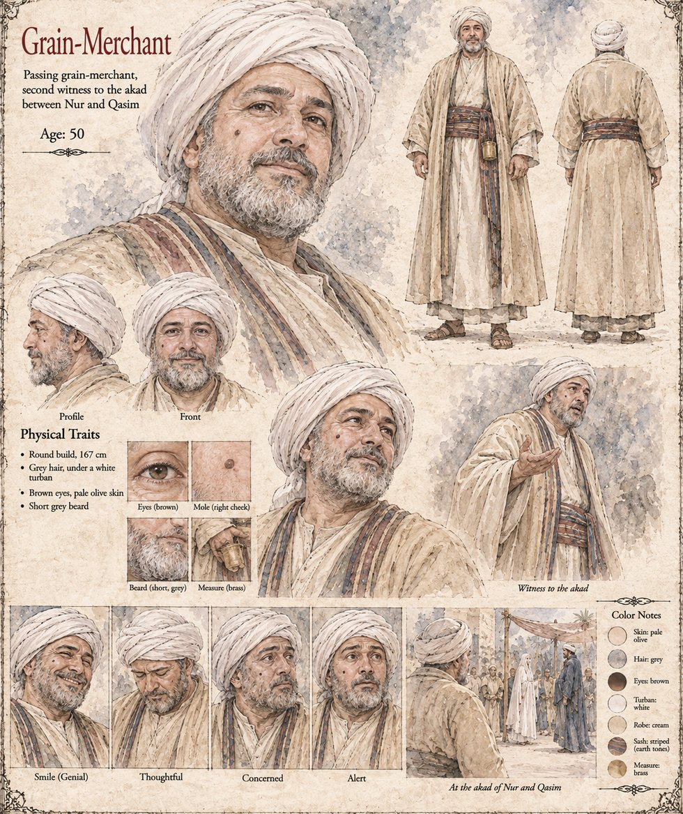

The Passing Grain-Merchant
Passing grain-merchant · unnamed · second witness to the akad between Nur and Qasim · fifty by the sheet
A grain-merchant passing through the village where Nur lives, who becomes the second witness, with the village well-keeper, to the akad by which the dinar passes from her to Qasim. The manuscript gives him no name.
The sheet draws him round and genial, double-chinned, with pale olive skin, brown eyes, grey hair under a large white turban and a short grey beard, a mole on the right cheek, in a long cream robe over a striped earth-toned sash, with a small brass measure at his belt and sandals. Its expression panels run smile (genial), thoughtful, concerned and alert, and its scenes are captioned Witness to the akad and At the akad of Nur and Qasim, the second showing a veiled woman and a man in a dark blue robe under a canopy. The age of fifty and everything visual are the sheet's.